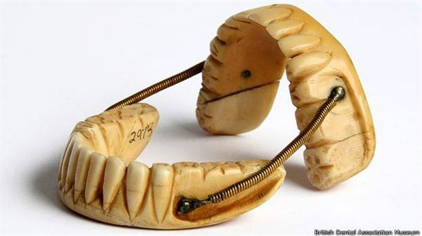
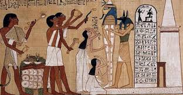
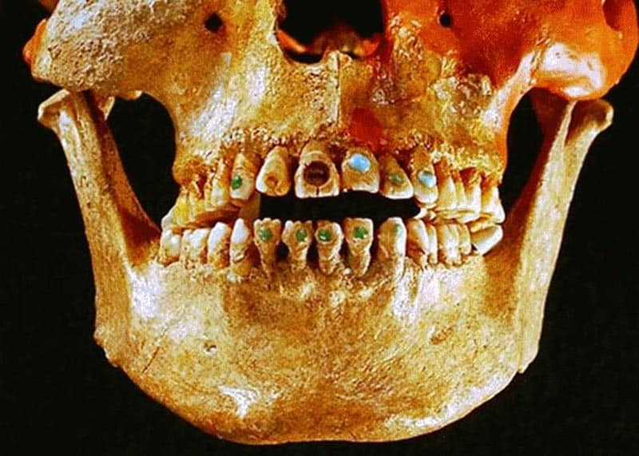
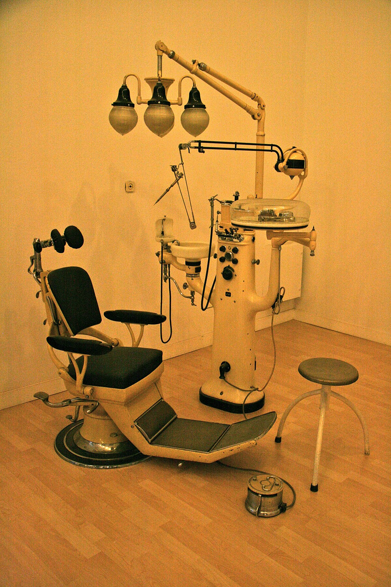

|  |
- Los primeros registros arqueológicos sobre los tratamientos dentales se remontan al año 2600 a. C. Los investigadores
encontraron escritos egipcios que hacían referencias a curanderos y médicos que atendían casos de problemas dentales.
|
 |
Fechas
- 200 a. C: Fueron los egipcios los primeros atisbos (una sospecha o una conjetura) de la odontología y curanderos que trataban los problemas dentales
460 a. C.: Hipócrates fue el que vinculó la caída de los dientes por causa de los alimentos, es decir, fue el que descubrió que alimentos perjudicaban la salud bucal
600 a. C. al 400 d. C.: Para esta época en roma se utilizaba el oro como material para cubrir algunos huecos dentales era algo así como una especie de “Empastes”
650 d. C.: Distintos médicos de origen indio identificaron alrededor de 75 dolencias bucales
|
|  |
En la Edad Media comenzó la profesionalización de la odontología
- La historia de la odontología línea de tiempo en la Edad Media se resume en la creación de múltiples materiales documentales y el inicio de la profesionalización de esta ciencia
700 d. C.: un texto médico en China menciona el uso de una “pasta plateada”
que es considerado un tipo de amalgama. Esto es un hito de la historia de la odontología.
|
 |
La odontología en la actualidad
- En estos últimos años la práctica de la odontología fue añadiendo nuevos avances en pro de los pacientes. Los tratamientos se realizan con mayor rapidez, sin dolor y son muy efectivos y duraderos. Además no solo garantizan buena salud
dental sino que mejoran la estética de la sonrisa. Y ayudan al autoestima de los pacientes..
|